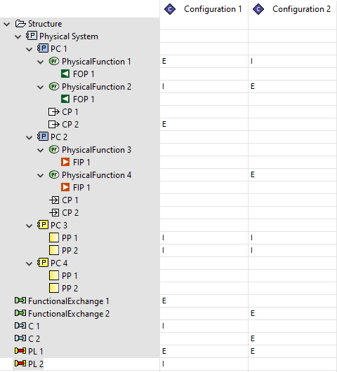
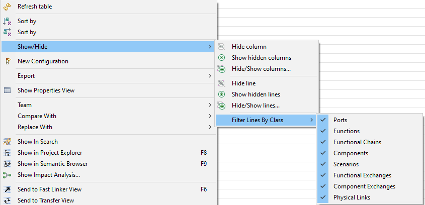
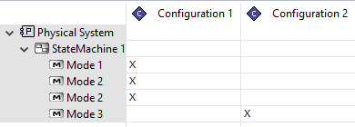
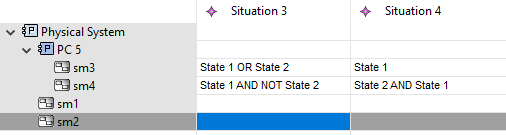
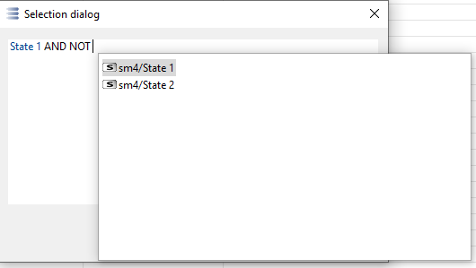
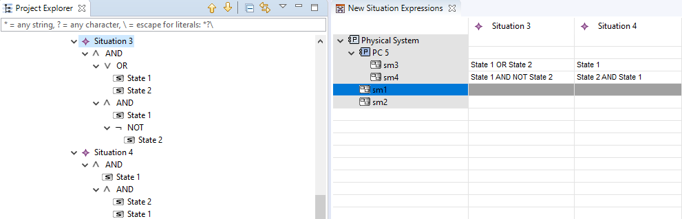
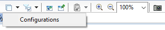
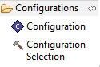

Configuration Elements tables allow to visualize and edit the set of elements that is excluded/included in a Configuration:

A Configuration Elements Table can be created on Components and Component Packages. The table will show all Configurations directly owned by that Component/Component Package as columns, and the scope elements of these Configurations as rows. (Because the scope of a Configuration depends solely on its location in the model tree, and all shown Configurations have the same location, they all have the same scope).
Elements that are excluded from a Configuration show 'E', elements that are included show 'I' and elements that are neither, have empty cell values.
To exclude an element from a Configuration, enter 'e' or 'E' in the corresponding table cell. To include an element from a Configuration, enter 'i' or 'I' in the corresponding table cell. To neither include/exclude an element from a Configuration, clear the table cell.
It is possible to hide/show elements by type by toggling element types via the table's context menu Show/Hide->Filter Lines by Class:

Mode and Configuration tables can be used to edit the supportedModes reference of Configurations:

A Mode and Configuration table can be created on a Component. All Configurations owned by that Component are displayed as columns, all of the owned States/Modes of the Component are shown as rows. If a Configuration is available in a given mode, an 'X' shows in the corresponding table cell.
Edit a cell by either entering 'x' or 'X' to add a Mode to the supportedModes reference of a Configuration, or clear the cell to remove it.
FIXME
FIXME
Situation Expression tables allow to textually edit the boolean expression of Situations:

Situation Expression tables can be created on Components. The columns of the table are the Situations owned by that component or its subcomponent. The rows of the table are the states/modes of the Component and its subcomponents.
The cells in this table cannot be edited directly, but via the cell's context menu: Change Expression... This will open a dialog where boolean expressions can be entered. The literals of the expression are entered by pressing Ctrl+Space, and selecting a State. The proposed States/Modes are the States of the Statemachine of the cell's row. The recognised keywords are AND, OR, NOT. Use parentheses '(' and ')' to override operator precedence:

The complete expression for a Situation is then the combined AND of the subexpressions of each row:

Situations with expressions that do not adhere to this syntactic subset of expressions cannot be displayed in the table and will not be shown in the table.
The viewpoint contributes a diagram extension layer named 'Configurations' to the following Capella Diagram Types:
To activate the layer on one of the supported diagrams select 'Configurations' from the Diagram Layer dropdown menu:

When the layer is active, the tool palette will show a tool group 'Configurations':

The 'Configuration' tool allows to create new Configuration model elements. It can be applied on the diagram canvas or any of the components shown on the diagram.
The 'Configuration Selection' tool allows to show existing Configuration model elements on the diagram. It can be applied on the diagram canvas or any of the components shown on the diagram.
When a Configuration is shown on a diagram, elements that are included in the Configuration have their standard color. Elements that are excluded are shown in red, elements that are neither excluded nor included are greyed out.
FIXME: What happens with multiple configurations on a diagram? FIXME: What happens with out of scope elements?